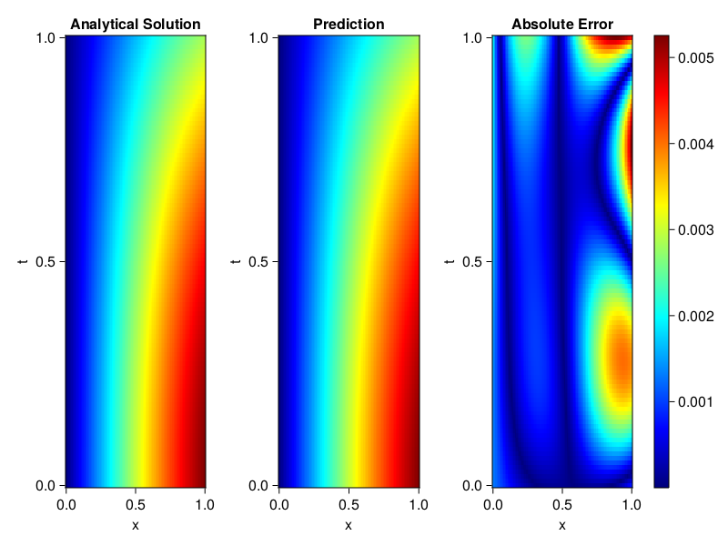
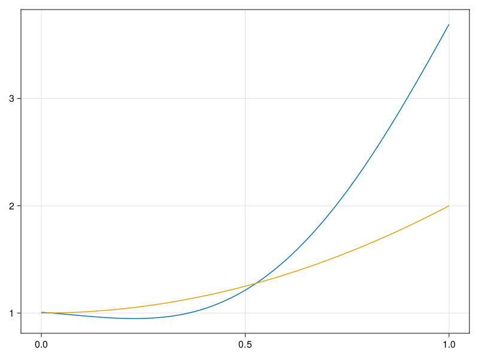

Inverse problem for the wave equation with unknown velocity field
We are going to sovle the wave equation.
using Sophon, ModelingToolkit, IntervalSets
using Optimization, OptimizationOptimJL
@parameters x, t
@variables u(..), c(..)
Dₜ = Differential(t)
Dₜ² = Differential(t)^2
Dₓ² = Differential(x)^2
s(x,t) = abs2(x) * sin(x) * cos(t)
eq = Dₜ²(u(x,t)) ~ c(x) * Dₓ²(u(x,t)) + s(x,t)
bcs = [u(x, 0) ~ sin(x),
Dₜ(u(x, 0)) ~ 0,
u(0, t) ~ 0,
u(1, t) ~ sin(1) * cos(t)]
domains = [t ∈ Interval(0.0, 1.0),
x ∈ Interval(0.0, 1.0)]
@named wave = PDESystem(eq, bcs, domains, [t,x], [u(x,t),c(x)])\[ \begin{align} \frac{\mathrm{d}}{\mathrm{d}t} \frac{\mathrm{d}}{\mathrm{d}t} u\left( x, t \right) =& c\left( x \right) \frac{\mathrm{d}}{\mathrm{d}x} \frac{\mathrm{d}}{\mathrm{d}x} u\left( x, t \right) + \cos\left( t \right) \left|x\right|^{2} \sin\left( x \right) \end{align} \]
Here the velocity field $c(x)$ is unknown, we will approximate it with a neural network.
pinn = PINN(u = FullyConnected((2,16,16,16,1), sin),
c = FullyConnected((1,16,16,1), tanh))
sampler = QuasiRandomSampler(500,100)
strategy = NonAdaptiveTraining(1, (10,10,1,1))NonAdaptiveTraining{Int64, NTuple{4, Int64}}(1, (10, 10, 1, 1))Next we generate some data of $u(x,t)$. Here we place two sensors at $x=0.1$ and $x=0.5$.
ū(x,t) = sin(x) * cos(t)
x_data = hcat(fill(0.1, 1, 50), fill(0.5, 1, 50))
t_data = repeat(range(0.0, 1.0, length = 50),2)'
input_data = [x_data; t_data]
u_data = ū.(x_data, t_data)1×100 Matrix{Float64}:
0.0998334 0.0998126 0.0997503 0.0996464 … 0.275281 0.267213 0.259035Finally we construct the inverse problem and solve it.
additional_loss(phi, θ) = sum(abs2, phi.u(input_data, θ.u) .- u_data)
prob = Sophon.discretize(wave, pinn, sampler, strategy; additional_loss=additional_loss)
@time res = Optimization.solve(prob, BFGS(), maxiters=1000)u: ComponentVector{Float64}(u = (layer_1 = (weight = [-0.31427751375901586 0.22914934870521636; -0.5667641983551683 -0.320396821035702; … ; -0.6320108798617073 -0.4946593865437533; -0.08661570903877946 -1.4852417292931686], bias = [-0.05480105682566175; -0.14729980586392769; … ; 0.022984467306622604; 0.418957100466176;;]), layer_2 = (weight = [-0.06970541950446439 -0.2777946719500239 … 0.19322089467747372 -0.2539073105125716; 0.027489645882333 -0.06881470526623543 … -0.26781143555002174 -0.5174555686801424; … ; 0.552439849840593 0.2854797119863833 … -0.2965199767956199 0.5115290081218372; -0.08629149442744312 0.5306176467270818 … -0.10926761971788763 -0.4243500584042799], bias = [0.11765509633530125; -0.1214133041207588; … ; 0.16376553145072753; 0.27054367781051425;;]), layer_3 = (weight = [-0.23817691218182319 -0.10218635726147299 … 0.3716600928565129 -0.49000805598420744; 0.014902489232328767 0.3662656133892853 … 0.05057099172109876 0.6579109064345033; … ; 0.12046708452107001 0.11044497742608196 … -0.004584482289587015 -0.26768157170875506; -0.23498660108550415 0.062045203564746645 … 0.03243188378419912 -0.07542932523565044], bias = [0.11280567997503475; -0.15617218467763863; … ; -0.20162109163636674; -0.09132175949027507;;]), layer_4 = (weight = [0.03621733517751906 0.3121593561106047 … 0.44214512263783023 0.27377024443573295], bias = [-0.1466964445879561;;])), c = (layer_1 = (weight = [-0.736106786506738; -2.142052601498895; … ; 0.7467680768630652; 0.7804448846361813;;], bias = [0.17843500997675188; 0.18541310949333412; … ; -0.5004729097908655; -0.6772958422374354;;]), layer_2 = (weight = [-0.0041390337559279655 0.1292898748904789 … 0.7165304708063726 0.7035542546814259; 0.2214551185990158 0.2982768213512761 … 0.10798665520647427 0.1927726810800672; … ; 0.6706020625095548 -0.5987170173971241 … 0.058793042324928185 0.6061898139363336; 0.4233928278463246 0.3266206516714456 … -1.0846238154273153 -0.7687605037083468], bias = [-0.019020545968797556; -0.684515132105829; … ; -0.09356267135842368; -0.14178411195983073;;]), layer_3 = (weight = [0.9533880741227813 -0.39718779296581835 … -0.9135925827928868 -1.4574626671596937], bias = [0.993601128842014;;])))Let's visualize the predictted solution and inferred velocity
using CairoMakie
ts = range(0, 1; length=100)
xs = range(0, 1; length=100)
u_pred = [pinn.phi.u([x, t], res.u.u)[1] for x in xs, t in ts]
c_pred = [pinn.phi.c([x], res.u.c)[1] for x in xs]
u_true = [ū(x, t) for x in xs, t in ts]
c_true = 1 .+ abs2.(xs) |> vec
axis = (xlabel="x", ylabel="t", title="Analytical Solution")
fig, ax1, hm1 = heatmap(xs, ts, u_true, axis=axis; colormap=:jet)
ax2, hm2= heatmap(fig[1, end+1], xs, ts, u_pred, axis= merge(axis, (;title = "Prediction")); colormap=:jet)
ax3, hm3 = heatmap(fig[1, end+1], xs, ts, abs.(u_true .- u_pred), axis= merge(axis, (;title = "Absolute Error")); colormap=:jet)
Colorbar(fig[:, end+1], hm3)
fig
fig, ax = lines(xs, c_pred)
lines!(ax, xs, c_true)
fig